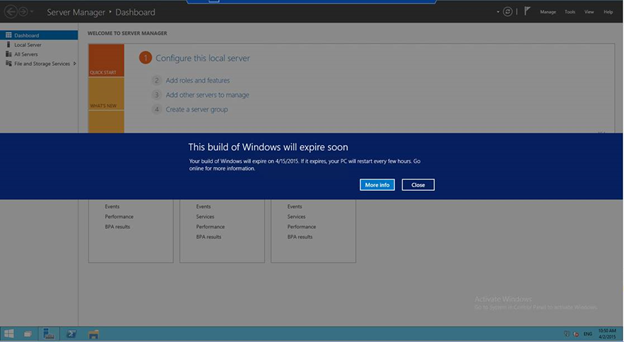
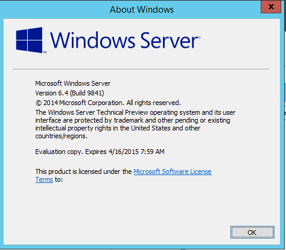

This Build of Windows will expire soon – (Windows Server Technical Preview)
Page content
UPDATE : Hotfix is now available and for more details please have a look at my blog http://nirmalt.com/2015/04/14/continue-to-use-windows-server-technical-preview-1-oct-2014
If you are running Windows Server Preview (Technical Preview 1 Released in 1st Oct 2014), you might have already realized that it’s set to expire on 15th April.


While Microsoft is preparing to release Technical Preview 2 sometime in May, we will need to look for an alternative to continue using Windows Server Preview build. Good news for us, today morning a new blog post was published in the Windows Server blog, stating that there will be a workaround published soon to extend the trial. I will post back with more details when it becomes available.